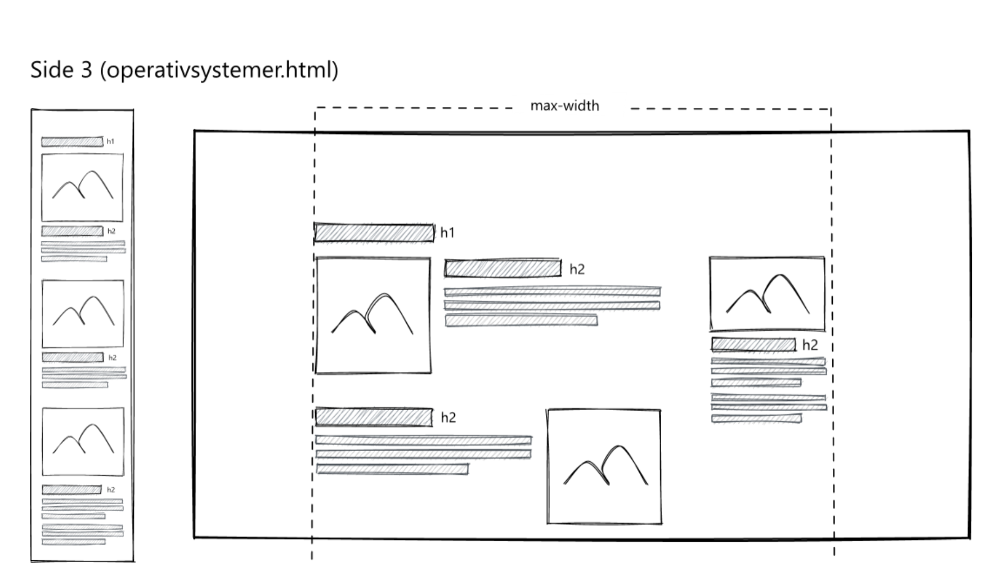
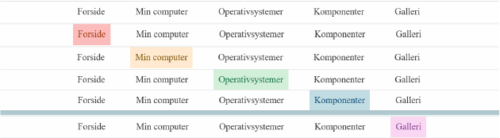

Tema 2
Grundlæggende Web
Tema 2 var vores første "rigtige" tema, da tema 1 var vores introuge. I tema 2 blev vi for første gang stillet til opgave at skulle producere en hjemmeside. Dette hjemmesidesprojekt kom også til at fungere som vores studiestartsprøve. Temaet skulle introducere os for de grundlæggemde principper og mest anvendte værktøjer for en multimediedesigner, og derved elementer og koncepter vi ville komme til at bruge fremover. Her begyndte vi også at være hvordan hjemmesider sættes op i HTML og CSS - det grundlæggende inden for webdesign (i hvert fald kodemæssigt).
Vi fik undervisning i lidt billede redigering, så
Til projektet ↗
sådan bliver det brugt og dette lærte jeg
Og hvad blev vi givet af materiale. Hvad gjorde jeg og hvad lærte jeg?

Så jeg brugte en del tid på at få det til at virke. Hvad lærte jeg? - det var muligt. Lærte også at jeg ville kunne vælge at farvene forblev efter at en side blev valgt, men havde ikke lært en mere avanceret måde at kunne kode endnu, så alle eksempler jeg læste kunne jeg ikke forstå eller følge.